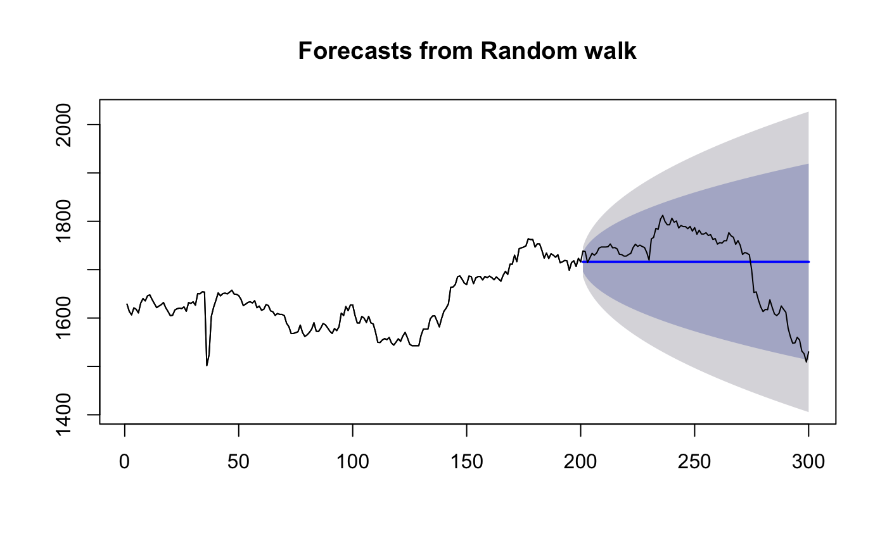

Returns range of summary measures of the forecast accuracy. If x is
provided, the function measures test set forecast accuracy
based on x-f. If x is not provided, the function only produces
training set accuracy measures of the forecasts based on
f["x"]-fitted(f). All measures are defined and discussed in Hyndman
and Koehler (2006).
accuracy(object, ...) # S3 method for default accuracy(object, x, test = NULL, d = NULL, D = NULL, f = NULL, ...)
| object | An object of class “ |
|---|---|
| ... | Additional arguments depending on the specific method. |
| x | An optional numerical vector containing actual values of the same
length as object, or a time series overlapping with the times of |
| test | Indicator of which elements of |
| d | An integer indicating the number of lag-1 differences to be used for the denominator in MASE calculation. Default value is 1 for non-seasonal series and 0 for seasonal series. |
| D | An integer indicating the number of seasonal differences to be used for the denominator in MASE calculation. Default value is 0 for non-seasonal series and 1 for seasonal series. |
| f | Deprecated. Please use `object` instead. |
Matrix giving forecast accuracy measures.
The measures calculated are:
ME: Mean Error
RMSE: Root Mean Squared Error
MAE: Mean Absolute Error
MPE: Mean Percentage Error
MAPE: Mean Absolute Percentage Error
MASE: Mean Absolute Scaled Error
ACF1: Autocorrelation of errors at lag 1.
By default, the MASE calculation is scaled using MAE of training set naive
forecasts for non-seasonal time series, training set seasonal naive forecasts
for seasonal time series and training set mean forecasts for non-time series data.
If f is a numerical vector rather than a forecast object, the MASE
will not be returned as the training data will not be available.
See Hyndman and Koehler (2006) and Hyndman and Athanasopoulos (2014, Section 2.5) for further details.
Hyndman, R.J. and Koehler, A.B. (2006) "Another look at measures of forecast accuracy". International Journal of Forecasting, 22(4), 679-688. Hyndman, R.J. and Athanasopoulos, G. (2018) "Forecasting: principles and practice", 2nd ed., OTexts, Melbourne, Australia. Section 3.4 "Evaluating forecast accuracy". https://otexts.org/fpp2/accuracy.html.
fit1 <- rwf(EuStockMarkets[1:200,1],h=100) fit2 <- meanf(EuStockMarkets[1:200,1],h=100) accuracy(fit1)#> ME RMSE MAE MPE MAPE MASE ACF1 #> Training set 0.4393467 15.8461 8.959648 0.02128535 0.5533582 1 -0.007760885accuracy(fit2)#> ME RMSE MAE MPE MAPE MASE #> Training set 6.24991e-14 57.83723 46.98108 -0.1240662 2.865357 1accuracy(fit1,EuStockMarkets[201:300,1])#> ME RMSE MAE MPE MAPE MASE #> Training set 0.4393467 15.8461 8.959648 0.02128535 0.5533582 1.00000 #> Test set 0.8900000 78.1811 63.311200 -0.16763307 3.7897316 7.06626 #> ACF1 #> Training set -0.007760885 #> Test set NAaccuracy(fit2,EuStockMarkets[201:300,1])#> ME RMSE MAE MPE MAPE MASE #> Training set 6.249910e-14 57.83723 46.98108 -0.1240662 2.865357 1.000000 #> Test set 8.429485e+01 114.96571 105.65361 4.7004265 6.075968 2.248855plot(fit1)